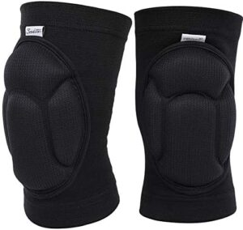

Balones de voleibol: Resistentes y cómodos, con acolchado que protege el cuerpo, fabricados con materiales reciclables. Ofrecen sostenibilidad ambiental y diseños llamativos.

Rodilleras: Disponibles en varias tallas, son cómodas y están hechas de materiales reciclables, ideales para protegerse de golpes, con un diseño atractivo.
Braceras: Fabricadas con materiales reciclables, brindan soporte y comodidad con un diseño ergonómico y tallas variadas.